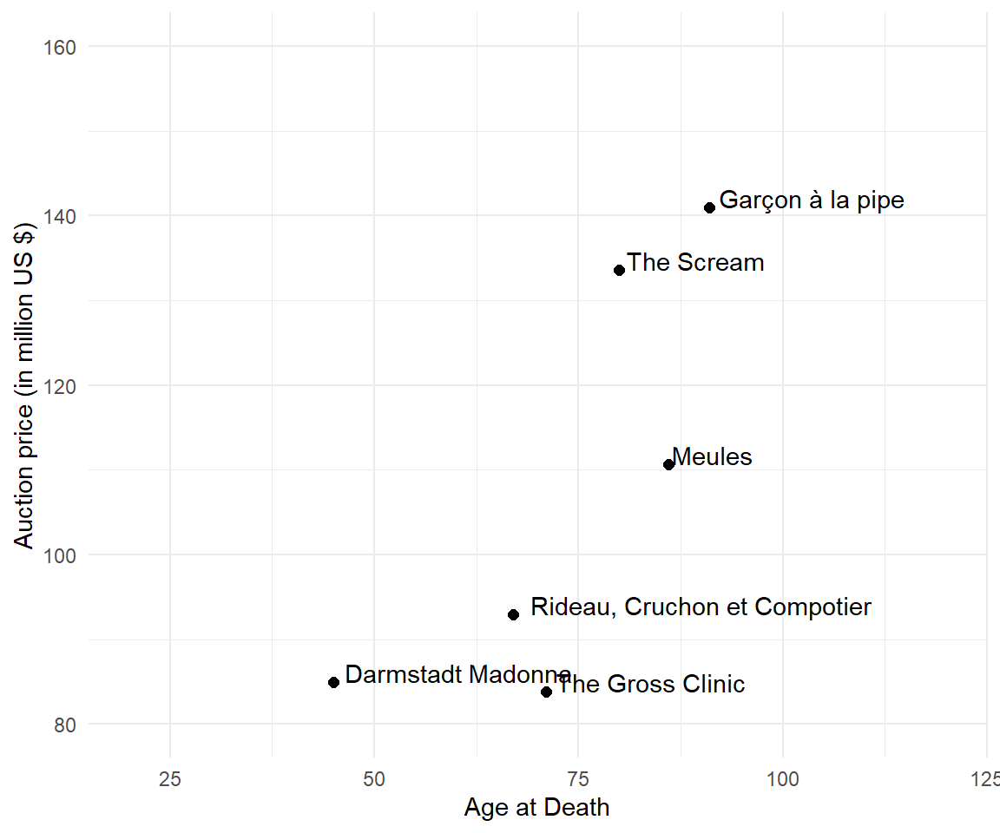

Chapter 8 Text Mining
Text data usually consists of documents which can represent words, sentences or even paragraphs of free flowing text. The inherent unstructured (no neatly formatted data columns!) and noisy nature of textual data makes it harder for data analysts to directly work on raw text data.
8.1 Wikipedia
Access the intro information on R from English Wikipedia using the wikifacts package:
library(wikifacts)
R_EN <- wiki_define('R (programming language)')
R_EN
#> R (programming language)
#> "R is a programming language for statistical computing and graphics supported by the R Core Team and the R Foundation for Statistical Computing. Created by statisticians Ross Ihaka and Robert Gentleman, R is used among data miners, bioinformaticians and statisticians for data analysis and developing statistical software. The core R language is augmented by a large number of extension packages containing reusable code and documentation.\nAccording to user surveys and studies of scholarly literature databases, R is one of the most commonly used programming languages in data mining. As of April 2023, R ranks 16th in the TIOBE index, a measure of programming language popularity, in which the language peaked in 8th place in August 2020.The official R software environment is an open-source free software environment within the GNU package, available under the GNU General Public License."8.1.1 Cleaning
Load the tidytext and stringr package. We summarize individual tasks like removing digits, punctuation, whitespaces and seting everything to lower case in the clean_text() function.
library(tidyverse)
library(tidytext)
library(stringr)
## text cleaning
clean_text <- function(x) {
x %>%
## Remove digits
str_remove_all("[:digit:]") %>%
## Remove punctuation
str_remove_all("[[:punct:]]") %>%
## Make everything lowercase
str_to_lower() %>%
## Remove any trailing whitespace around the text
str_trim("both") %>%
## Remove newline character
str_replace_all("[\r\n]" , " ")
}R_EN_clean <- clean_text(R_EN)
R_EN_clean
#> [1] "r is a programming language for statistical computing and graphics supported by the r core team and the r foundation for statistical computing created by statisticians ross ihaka and robert gentleman r is used among data miners bioinformaticians and statisticians for data analysis and developing statistical software the core r language is augmented by a large number of extension packages containing reusable code and documentation according to user surveys and studies of scholarly literature databases r is one of the most commonly used programming languages in data mining as of april r ranks th in the tiobe index a measure of programming language popularity in which the language peaked in th place in august the official r software environment is an opensource free software environment within the gnu package available under the gnu general public license"8.1.2 Tidytext Format
Tidy data has a specific structure:
- Each variable is a column
- Each observation is a row
We thus define the tidy text format as being a table with one-token-per-row. A token is a meaningful unit of text, such as a word, that we are interested in using for analysis, and tokenization is the process of splitting text into tokens.
library(tidyverse)
tidytext <- R_EN_clean %>%
as_tibble() %>%
unnest_tokens(word, value) %>%
count(word, sort=TRUE)
head(tidytext)
#> # A tibble: 6 × 2
#> word n
#> <chr> <int>
#> 1 the 9
#> 2 r 8
#> 3 and 7
#> 4 in 5
#> 5 is 5
#> 6 of 5Notice that the, r, and, in, is, of do not contain a lot of valuable insights.
8.1.3 Stopwords
Stop words are a set of commonly used words in a language. Examples of stop words in English are “a”, “the”, “is”, “are” and etc. Stop words are commonly used in Text Mining and Natural Language Processing (NLP) to eliminate words that are so commonly used that they carry very little useful information.
data(stop_words)
tidytext <- tidytext %>%
anti_join(stop_words)
head(tidytext)
#> # A tibble: 6 × 2
#> word n
#> <chr> <int>
#> 1 language 4
#> 2 data 3
#> 3 programming 3
#> 4 software 3
#> 5 statistical 3
#> 6 computing 28.1.4 Term Frequency
Word clouds (also known as text clouds or tag clouds) work in a simple way: the more a specific word appears in a source of textual data (such as a speech, blog post, or database), the bigger and bolder it appears in the word cloud.
library(wordcloud)
wordcloud(words = tidytext$word, freq = tidytext$n, min.freq = 2, max.words=200,
random.order=FALSE, rot.per=0.35, colors=brewer.pal(8, "Dark2"))
8.1.5 Little bit of Scraping
Text mining often goes hand in hand with data scraping. Use rvest package and read_html() to get the entire text of the R Wikipedia article.
library(tidyverse)
library(rvest)
read_html("https://en.wikipedia.org/wiki/R_(programming_language)") %>%
## extract paragraphs
html_nodes("p") %>%
## extract text
html_text() %>%
## clean
clean_text() %>%
as_tibble() %>%
## tidy text
unnest_tokens(word, value) %>%
count(word, sort=TRUE) %>%
## stopwords
anti_join(stop_words) %>%
## select first
top_n(20) %>%
## reorder
mutate(word = reorder(word, n)) %>%
## create frequency plot
ggplot(aes(x=word, y = n)) +
geom_col() + coord_flip() +
ggtitle("Term Frequency of top 20 clean words in Wikipedia aRticle")
R seems to be top-notch if you like to become fluent in data.
8.2 Field Trip to Berlin
On Thursday, 02 June 2022, the class went on a field trip to Humboldt Forum, Berlin to visit the exhibition Berlin Global (get the virtual tour).
Berlin Global feels very modern. It combines historical information and stories with modern art and design as well as interactive features. The interaction comes from decisions you can make yourself and interactive elements like a wheel that needs about 5 people to start a video sequence. It triggers interactions between visitors and people who are normally strangers who would not have interacted otherwise. It is educational and fun. Although it covers some of the darkest parts of (German) history.

Students wrote down their impressions as in a diary entry or personal report and post them on tripadvisor. All reviews should address the following questions:
- How is globality represented in "Berlin Global"?
- How is the colonial past depicted in Room 1 "Weltdenken"?
At the time, the exhibition did not have any review on tripadvisor. Thus almost all reviews on tripadvisor stem from students of the class of 2022. We use this review data on tripadivsor to learn about the student experience.
library(DT)
library(tidyverse)
tripadvisor <- read.csv("data/tripadvisor_berlin_global.csv")
tripadvisor %>%
mutate(Text_Beginning = substr(Text, 1, 50)) %>%
select(Author, Title, Text_Beginning) %>%
datatable(options = list(pageLength = 5))8.2.1 Text Preparation
Again, make use of the clean_text() function.
# use clean_text()
tripadvisor$Text_Clean <- clean_text(tripadvisor$Text)
# tidy text format for all text
tidy_trip <- tripadvisor %>%
unnest_tokens(word, Text_Clean) %>%
count(word, sort=TRUE)
# tidy text per use
tidy_reviews <- tripadvisor %>%
group_by(Author) %>%
unnest_tokens(word, Text_Clean)
tidy_trip <- tidy_trip %>%
anti_join(stop_words)8.2.2 Sentiment Analysis
The sentimentr package offers several options to analyse sentiments at the sentence or aggregate level. A description can be found on GitHub https://github.com/trinker/sentimentr.
Definition
Sentiment analysis is the process of computationally identifying and categorizing text, especially in order to determine whether the writer's attitude is positive, negative, or neutral.
8.2.2.1 Aggregate Level
The aggregate level summarizes all text information by author into one text block. The sentiment() function displays the total word count and an overall sentiment score (the higher the more positive).
library(sentimentr)
library(magrittr)
library(dplyr)
head(sentiment(tripadvisor$Text_Clean), n=10)
#> element_id sentence_id word_count sentiment
#> 1: 1 1 453 1.16515866
#> 2: 2 1 73 0.48513556
#> 3: 3 1 143 0.39303374
#> 4: 4 1 317 0.28532123
#> 5: 5 1 101 0.75612876
#> 6: 6 1 391 0.01365449
#> 7: 7 1 229 0.31192290
#> 8: 8 1 152 0.19567959
#> 9: 9 1 495 0.68421173
#> 10: 10 1 136 0.46647615element_id represents the . word_count is the total number of words per review . The value of sentiment can be negative .
8.2.2.2 Sentence Level
Create a table from all reviews such that each sentence per person is a row. Use get_sentences() from the sentimentr package. It returns a list object. Find a way to unlist and collect the information in a dataframe. The sentence level analysis is based on original Text.
sentences <- get_sentences(tripadvisor$Text)
sentence_level <- data.frame(id = character(),
sentence = character(),
stringsAsFactors=FALSE)
for (i in 1:nrow(tripadvisor)) {
# Create data frame for 1 person all sentences
tmp <- as.data.frame(sentences[i], col.names = "sentence") %>%
mutate(id = i)
# Row bind each iteration
sentence_level <- rbind(sentence_level, tmp)
}We can get a sentiment per sentence highlighted by red or green. This allows humans to skim through the reviews to discover insights.
# Yeah
sentence_level %>%
mutate(review = get_sentences(sentence)) %$%
sentiment_by(sentence, id) %>%
highlight()